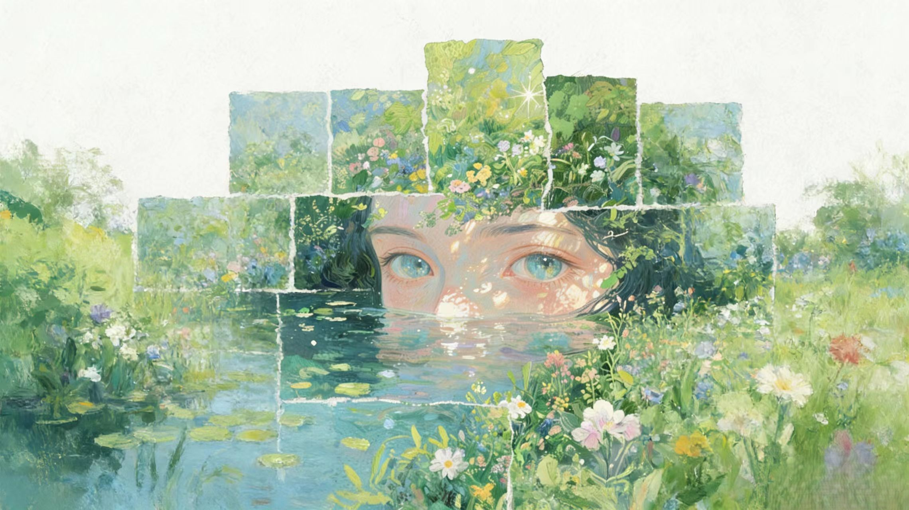
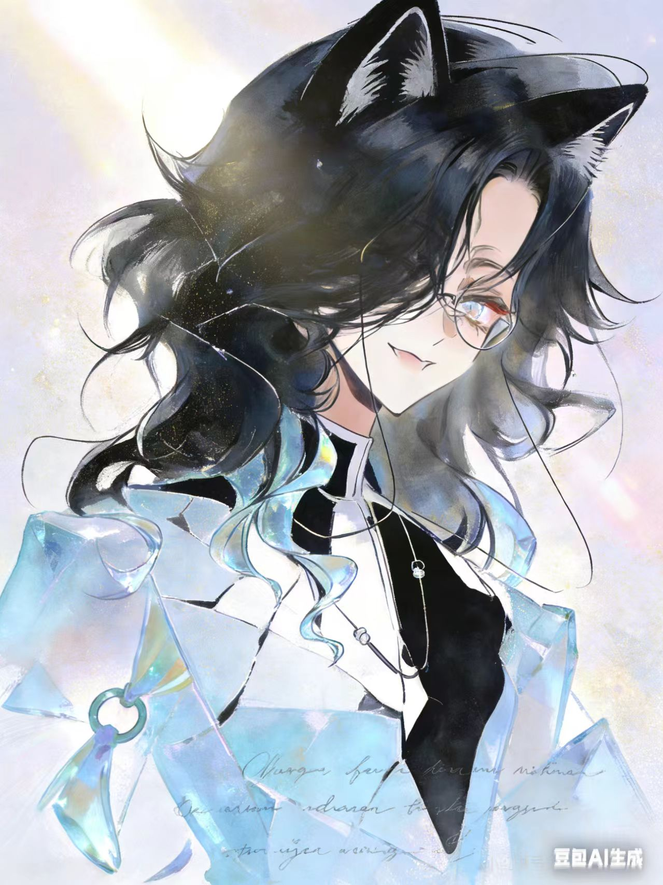
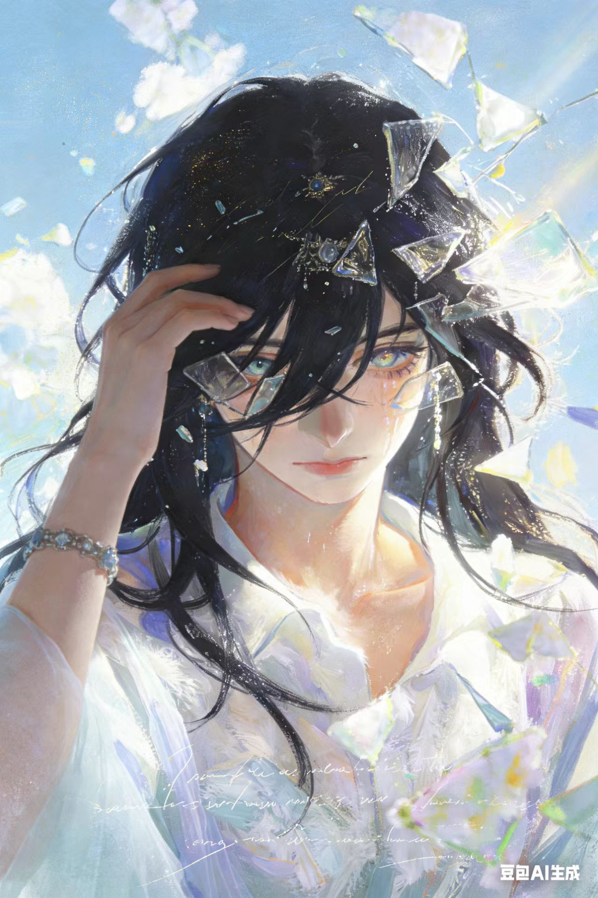
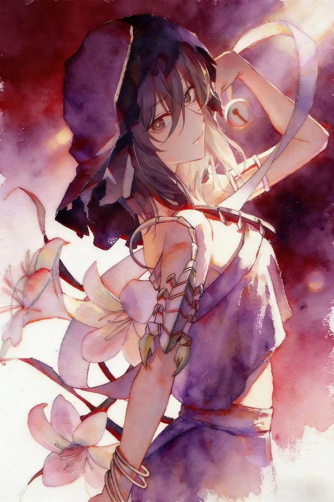
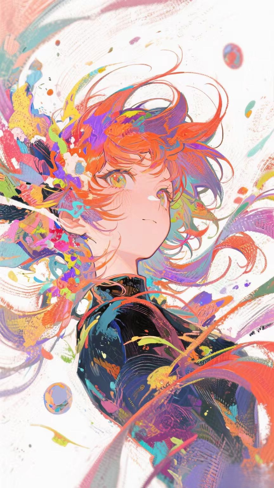

在水光与草色之间，记忆像春天一样慢慢发亮。spring-memory

在水光与草色之间，记忆像春天一样慢慢发亮。spring-memory

冷银的风掠过镜片，孤独也有了温柔的折射。silver-halo

碎光在瞳孔里游走，像一句还没说完的誓言。glass-oath

丝带划开暮色，心跳在紫红里悄悄升温。violet-ribbon

色彩爆裂成诗，少年从想象的边界向你走来。color-rise